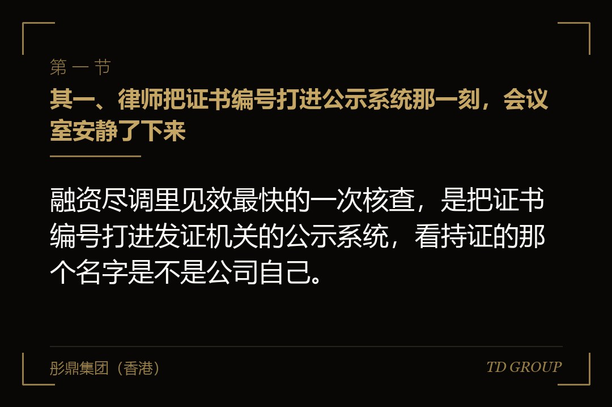
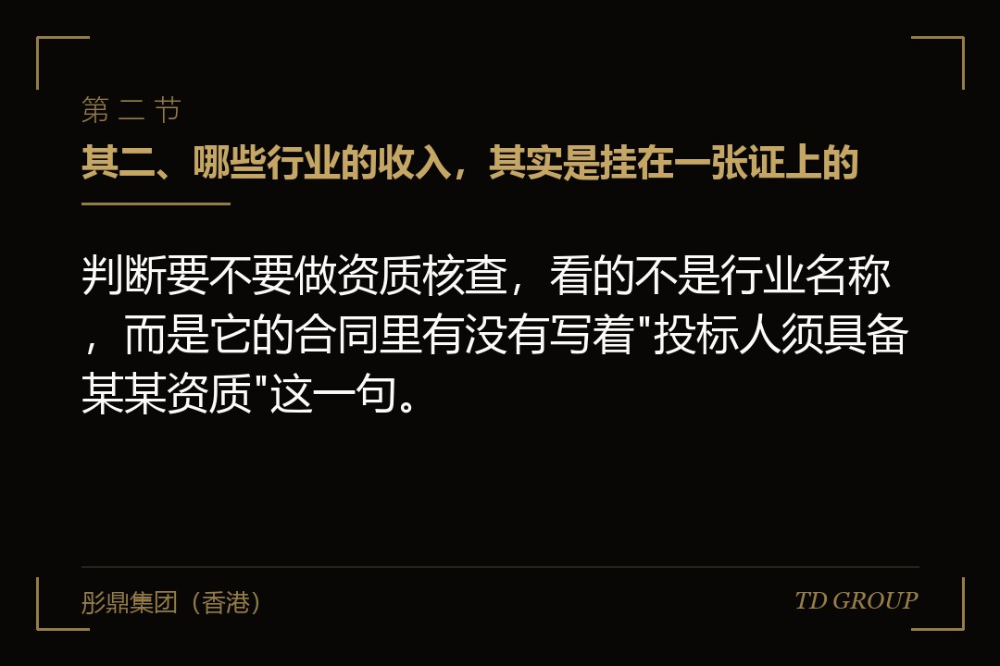
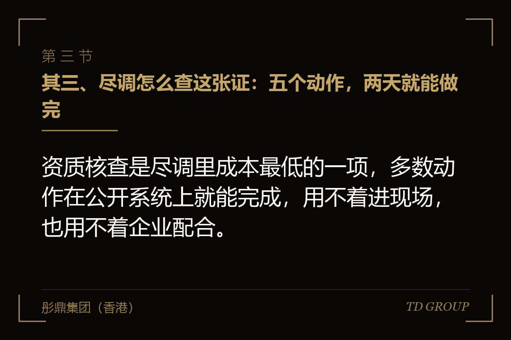

其一、律师把证书编号打进公示系统那一刻，会议室安静了下来

结论先行：融资尽调里见效最快的一次核查，是把证书编号打进发证机关的公示系统，看持证的那个名字是不是公司自己。
假设有家做环保工程的公司，年收入两个亿，其中八成来自需要资质的项目——工业废水处理、危险废物的收集与处置。招标文件里都写着一句话：投标人须具备相应等级的资质。
公司准备融一轮，投资方派了律师进场。资料清单里有一项是"全部资质证书扫描件"，公司很配合，当天就发了过去，一共七份，扫描件清晰，有效期也都还在。
律师做的动作只有一个：把每份证书上的编号逐个打进发证机关的公示系统，看系统里显示的持证单位是谁。
七份里有两份对不上。那两份的持证单位写着另一家公司，名字跟这家很像，只差两个字，法定代表人是创始人的姐夫。而这两份证，恰恰对应公司收入里占比最大的那块业务。
创始人的解释在这个行业里很常见："那边是我们自己的关联公司，证办在那边是因为当年人员条件是那边凑齐的，业务其实都是我们在做，钱也都进我们的账。"
这句话本身没有撒谎。麻烦的是，它同时说清楚了另一件事：占公司八成的那部分收入，是以另一家公司的名义承接的。
从那一刻起，尽调要回答的问题就换了一个：不再是这家公司过去三年赚了多少钱，而是这些钱在法律上算谁挣的，以及明年还能不能接着这么挣。
其二、哪些行业的收入，其实是挂在一张证上的

结论先行：判断要不要做资质核查，看的不是行业名称，而是它的合同里有没有写着"投标人须具备某某资质"这一句。
建筑与工程施工是典型。施工总承包与专业承包资质分等级，等级直接决定能接多大的单；超越等级承揽工程，合同存在被认定无效的风险，已经收的钱还可能面临返还或者折价争议。
环保这一块更紧。危险废物经营许可证是按废物类别和年处置量核发的，超出许可类别去收、去运、去处置，性质上属于无证经营，不是"多做了一点"。
医疗器械与药品经营按类别分档，二类备案、三类许可，不同产品对应不同的证；食品生产许可证也是按食品类别核发的，一张证覆盖不了全部品类，多做一个品类就要多办一张。
道路运输是两套证：企业的道路运输经营许可证，加上每一台车的营运证。车换了、增了、报废了，证要跟着动，而实务中最容易漏的就是车动了证没动。
劳务派遣的经营许可有效期通常是三年，到期不做延续就不能再经营；增值电信业务许可按业务种类核发，年报没有按时做会被列进经营异常；教育培训的办学许可与场地强绑定，换个地方等于重新办一次。
这些行业有个共同点：证不是荣誉，是准入。没有它，那份合同从签的时候起效力就有瑕疵，而不是等到被查处才有问题。
其三、尽调怎么查这张证：五个动作，两天就能做完

结论先行：资质核查是尽调里成本最低的一项，多数动作在公开系统上就能完成，用不着进现场，也用不着企业配合。
动作其一是公示比对。发证机关基本都有可查询的公示或者公告系统，输入证书编号就能看到持证单位、有效期、许可范围。这一步查的是"证是不是你的"，比看扫描件可靠得多。
动作其二是证载范围与实际业务逐项对照。把过去三年金额最大的那二十份合同拉出来，逐份对着证上写的许可类别看，找的是"接了证上没有的活"。
动作其三是有效期与延续、年检、年报。很多许可不是发一次管终身，它有换证周期，也有年度报送义务；到期前几个月没有启动延续，等于给这块收入设了一个明确的截止日。
动作其四是注册人员。带资质的行业通常要求配备一定数量的注册建造师、注册环保工程师或者其他技术人员，尽调会去查这些人的社保是不是在本公司缴纳、是不是同时挂在别的公司名下。
动作其五是许可对应的场地与设备。危废处置要有处置设施，食品生产要有车间，办学要有场地。证还在，而设施已经拆了、租约已经到期，这张证的实际状态就已经悬空了。
五个动作有个共同特点：都不依赖企业提供什么，全部可以从外部独立完成。所以企业方在这件事上没有解释空间——查出来是什么样，就是什么样。
其四、挂靠：业务用别人的名义接，钱进自己的账
结论先行：挂靠是指业务用有证那一方的名义承接，实际由没有证的一方施工和收款，双方按约定的比例分成。
这在施工与环保行业里是长期存在的做法。有资质的一方出证、出投标资格、出合同抬头，没资质的一方出人、出设备、出垫资，做完之后按点数结算管理费。双方都清楚是怎么回事，只是合同上不这么写。
它之所以在尽调里藏不住，是因为它同时在好几处留下互相矛盾的记录。合同抬头是甲公司，而实际收款账户是乙公司；投标文件里写的项目负责人，社保却在乙公司缴；现场的印章、材料采购发票、工人的工资发放主体，也常常跟合同抬头对不上。
尽调不需要证明谁的说法是真的，只需要把这几处摆在一起。三处对不上，这块收入的归属就成了要专门解释的事项，而不是可以一句带过的细节。
代价分三层。头一层是合同效力：以借用资质的方式承揽业务，相关合同存在被认定无效的风险，已完工程通常还能主张折价补偿，但争议成本和时间成本都由企业自己承担。
第二层是行政责任：出借资质的一方和借用的一方都可能被主管机关处理，情节重的会影响资质本身的存续。第三层是收入的归属：如果法律上这单业务是甲公司做的，那么把它记在乙公司的报表里，收入确认的依据就不成立。
需要说清楚的是，这一节讲的是这种安排会从哪里被看出来、会带来什么后果，以及怎么把它合法化。至于怎么让它更不容易被发现，不在讨论范围里——那个方向解决不了任何问题，只会把整改时点往后推，而推得越久，代价越大。
其五、集团拿证、子公司收钱：一种被当成内部安排的错配
结论先行：主体错配是指许可发给了集团或者某一家兄弟公司，而收入却记在另一家并没有这张证的运营主体上。
这一类比挂靠更常见，也更容易被企业自己忽略，因为它看上去是"自家人之间的事"。母公司当年办证时人员和场地条件更齐，证就办在了母公司；后来业务做大，为了方便管理另设了一家运营公司，客户合同慢慢都签到了运营公司名下。
企业内部的理解是"都是一家人"。而许可是发给特定法人的，它不随集团关系自动延伸，也不因为持股比例高就覆盖到下面。运营公司拿着母公司的证去承接业务，法律性质上跟借用外部公司的证没有本质区别。
在融资里这件事的杀伤力，往往体现在拟融资主体的选择上。投资人要投的是有收入的那家，而有证的是另一家；如果把证那家也装进来，又会牵出更多的历史沿革问题。
还有一种更细的错配：证是公司的，但许可范围写的是某个具体的地址或者某一条生产线，而实际生产早就搬到了新厂区。证的名字没错，地址错了，效果跟名字错了一样。
判断有没有这个问题，有个很省事的自查：把过去十二个月开出去的发票按开票主体分组，再把手上每一张证的持证主体列一遍，两张名单对不上的地方，就是要处理的地方。
其六、投资人不会因为一张证否掉项目，他会把这块收入从估值里拿掉
结论先行：资质问题在融资里的表现，通常不是当场被拒绝，而是估值被压下来、条款被加上去、打款被切成几笔。
处理方式一是收入调减。投资人和他的会计顾问会把归属存疑的那部分收入单独列出来，在做估值的时候按打折处理，甚至直接不计入可持续经营的口径。开头那家环保公司如果八成收入落在这一栏，估值的基础就只剩两成。
处理方式二是把它写进条款。常见的做法是把出资拆成两笔或者三笔，后面的几笔挂钩整改的里程碑；或者加一条特别赔偿，约定因资质问题产生的处罚、赔偿和合同无效损失由创始人一方承担；再或者把它设成回购的触发情形之一。
处理方式三是把它当成或有负债去估。行政处罚有幅度，合同无效有争议，这些都不是确定的数，但尽调会给一个区间，而这个区间会直接从投前估值里扣。
第四种是往后看。如果这家公司的时间表里有申报上市，那么资质与许可属于主体资格与业务独立性的核查项，历史上以他人名义承接业务的收入，需要在申报前把口径讲清楚，而不是等到问询函来了再补。我们跟华尔街俱乐部有合作，这两年见过的案例里，卡在这一格上的比卡在利润规模上的更多。
所以真正吃亏的地方不是"被发现了"，而是"发现得太晚"。融资谈到估值和条款阶段才暴露，企业方已经失去了讨论的余地——因为整改要多久这件事，此时是投资人说了算，不是企业说了算。
其七、补的路只有两条：证迁到收入这边，或者收入迁到证那边
结论先行：整改往哪个方向走，取决于人员和场地在谁那里，因为许可的核发条件看的就是这两样，不是股权关系。
路径一是把证迁到收入主体。多数许可不支持在两个法人之间直接过户，实务上往往是收入主体重新申领一张，而不是把旧的搬过来。重新申领要凑齐人员、场地、设备和管理制度，其中人员的社保连续缴纳月份数常常是硬条件，这一项没法赶工。
路径二是把收入迁到持证主体。让有证的那家去签合同、去收款、去开票，没证的那家转做采购、施工组织或者服务外包。这条路快，但它会改变集团内部的收入分布，也要重新安排关联交易的定价与合同，涉及税务口径的调整。
不论走哪条，动作顺序是固定的三段。先把新签合同的抬头、收款账户和开票主体统一到同一家，止住新的问题；再启动申领或者变更，把手续跑完；最后把不再使用的那条线关掉，包括终止分成安排、注销不再需要的证照。
时间要按年排。人员社保的连续月份、许可的受理与审查周期、必要时的现场核查，加起来通常是半年到两年，具体时限以主管机关正式规则文本为准。这就是为什么它必须在融资启动之前动手，而不是在尽调开始之后。
还有一点要提醒：整改留痕是加分不是减分。把变更过程、终止协议、新证的核发文件留档，恰恰证明企业主动做过一次清理；相反，悄悄停掉不留任何记录，会让后面的核查更难解释。
其八、收口：今天下午对着公示系统就能查完的七件事
结论先行：这件事不用先请外部机构进场，创始人本人花半天时间对着公开系统翻一遍，就知道自己手上有没有问题。
其一，把手上全部有效的证照列一张表，逐张把编号打进发证机关的公示系统，看持证单位写的是不是收入落在的那家公司。
其二，把过去三年金额最大的那二十份合同拉出来，逐份对着证上写的许可类别看一遍，圈出证上并没有覆盖到的那几份。
其三，逐张看证的有效期与延续时点，把需要在未来十八个月内换证、年检或者报送年报的那几张标出来，排进日程。
其四，把配备的注册人员名单拉出来，逐个核对社保的缴纳主体是不是本公司，以及有没有人同时挂在别的公司名下。
其五，把过去十二个月的开票主体分组，跟持证主体的名单对一遍，两张名单对不上的地方就是要处理的地方。
其六，翻一遍跟关联方之间有没有关于分成、管理费或者证照使用的书面约定，不论是正式合同、往来邮件，还是聊天记录里的一段确认。
其七，把上面六项的结果对着接下来的时间表看一遍——如果十二个月内有融资或者申报计划，整改就不是可选项，而是必须先动的那一件事。
因此，资质与许可这件事的风险，从来不在证本身有多难办，而在于它决定了一家公司的收入算不算数。这个判断做起来只要半天，做晚了却要用年来补。